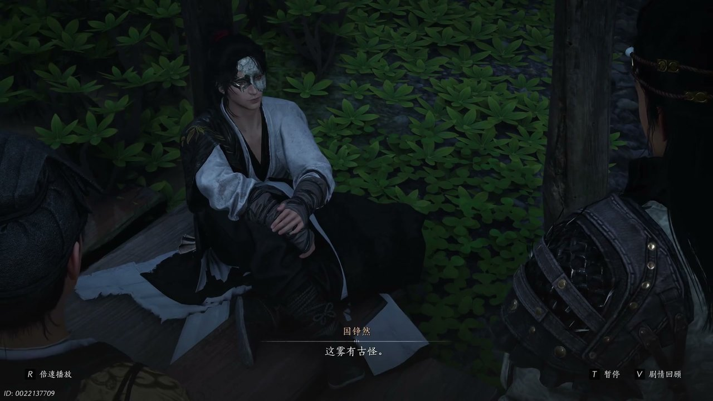
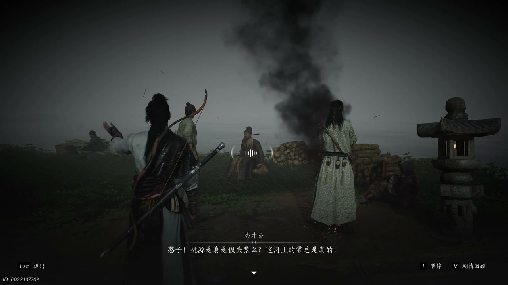
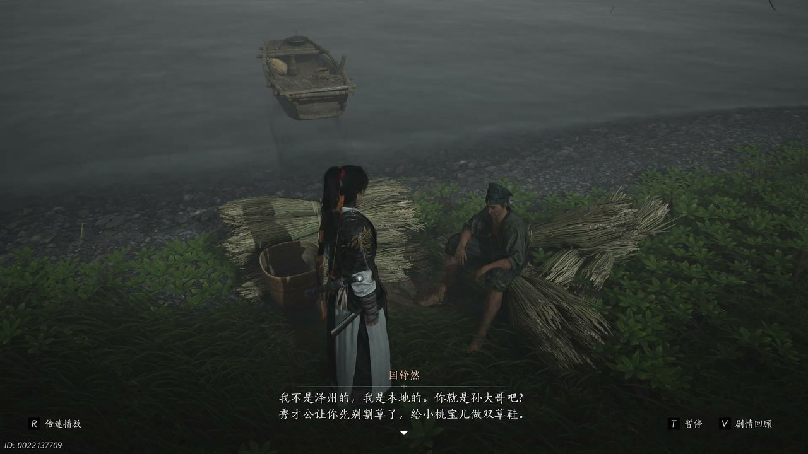
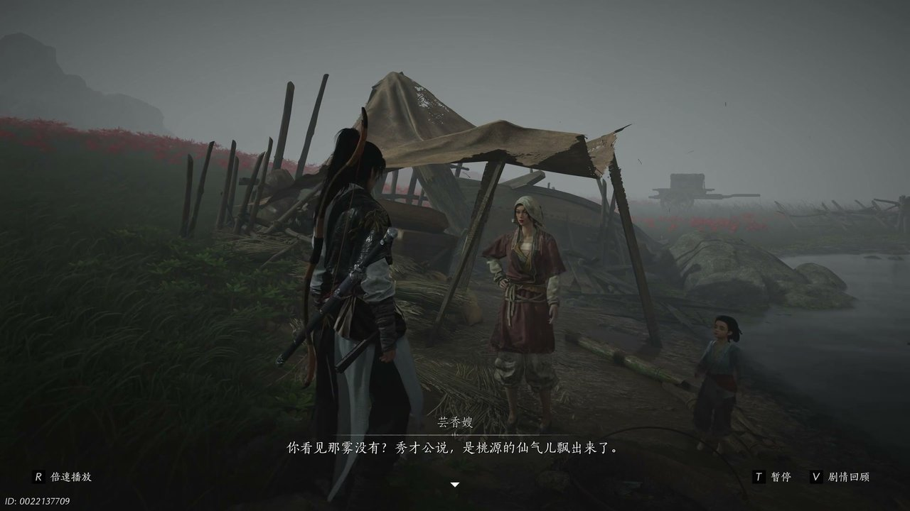
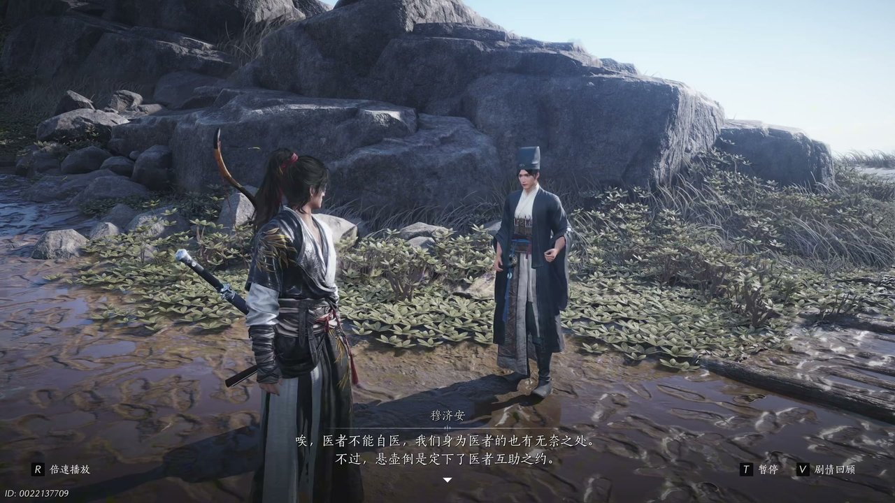
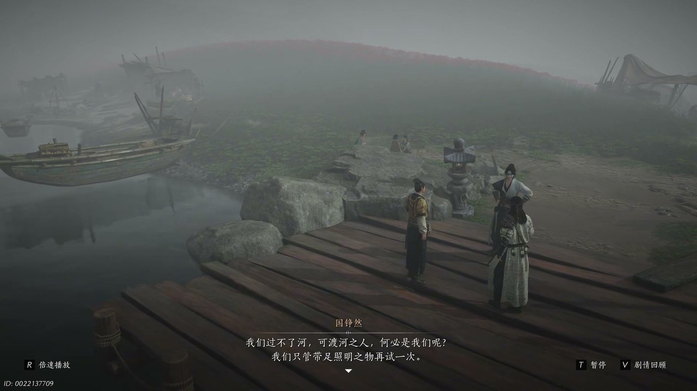

燕云背后的故事：第20集 渡江
燕云背后的故事：第20集 渡江

朋友们，上一集咱们说到——桃园传闻四起、斯南灵剑现世、阎王镖箱暗藏玄机；新来的朋友可能纳闷，少东家识破桃园是人为布局，为何执意跟着镖队深入险境。简单说，少东家想要借着运镖的机会渡过迷雾长河，探寻桃园秘境的真正面目。可他哪知道，河面迷雾是墨门布下的迷阵，寻常船只根本无法穿行。这不，少东家决定向渡河的流民打探迷雾渡河的诀窍，为穿越雾河做足准备。

迷雾河畔一间简陋木屋之内，雾气不断从门窗缝隙钻入屋内，周遭空气都变得朦胧起来。晋中原环顾四周，指尖轻触墙壁，眉头微微皱起，少东家驻足凝神感知周遭气息，开口说道：“这屋有古怪。”晋中原蹲下身查看地面纹路，缓缓回应：“此处像是古阵法雾锁迷津，只是我并不知他解法。”他转头看向一旁的冯继升，继续问道：“冯兄身为墨门中人，见过他吗？”冯继升摇了摇头，面露为难：“并未，我入门时间短，还是第一次见这种机关。”晋中原思索片刻，决定多次闯入迷雾探查关窍，少东家忽然心生一计，打算向已经多次尝试渡河的流民请教经验，晋中原主动提出陪同前往，安排冯继升留守看守镖箱、修补渡船。

河畔空地之上，逃难的流民分成两伙，彼此隔阂颇深。秀才公与丁大哥争执不休，丁大哥想要前往开封安稳度日，不愿执着于虚无的桃园，秀才公却一心想要渡过迷雾长河，寻一处远离战乱的净土。丁大哥连连叹气，担心开封城内依旧免不了征兵征战，秀才公语气坚定地反驳：“憨子，桃园是真是假，观紧吗？这河上的雾总是真的。”他告诉众人，只要渡过这片迷雾，便能躲开征税、抓壮丁的纷争，安稳种地生活。一旁年幼的小桃宝儿脚磨出水泡，哭闹不止，芸香嫂满心焦急，却没有多余的布料给孩子缝制新鞋，只能满脸无奈地安抚孩子。

少东家走上前去，拦下正要割草的孙平，温和开口：“你就是孙大哥吧，秀才公让你先别割草了，给小淘宝做双草鞋。”孙平满脸警惕，起初不愿与陌生人交谈，得知少东家知晓秀才公的安排，才放下戒备。孙平坦言自己早就编好了大半双草鞋，只是众人争抢割草，自己一直无暇完工。少东家主动提出帮忙把草鞋编织完整，顺带询问小桃宝儿兄长的下落，孙平神色黯淡，告知村庄遭遇祸乱，孩子的兄长早已失散，叮嘱少东家千万不要告诉年幼的宝儿真相，免得孩子哭闹不休。少东家接过未完工的草鞋，细心编织妥当，送到芸香嫂与小桃宝儿手中。

芸香嫂接过草鞋满心感激，看着河面上弥漫不散的白雾，对少东家说道：“你看见那雾没有，秀才公说是桃园的仙气飘出来了。”一旁的小桃宝儿连连附和，告诉少东家桃园里住着仙人，能够呼风唤雨，自己的哥哥就在桃园跟着仙人学习法术。孩子天真的话语，都是秀才公交代的说法，芸香嫂连忙致歉，解释流民们无依无靠，只能靠着这样的念想支撑下去。此时有流民不慎沾染毒花气息，身体骤然不适，穆济安正在一旁诊治伤者，他缺少几株特殊草药，便委托少东家前往对岸采摘，少东家欣然应允，顺便借着采药的机会熟悉河岸环境。

少东家顺利采回草药，协助穆济安熬制药汤，为中毒流民施针医治，病症很快得到缓解。穆济安十分欣赏少东家的医术天赋，将自己游历四方收集的残缺医书赠予他，少东家翻阅医书发现内容残缺，心中满是疑惑。他向穆济安发问，书中记载皆是医治他人的法子，若是自身患病该如何处理。穆济安轻叹一声，缓缓说道：“医者不能自医，我们身为医者的也有无奈之处。”他叮嘱少东家，即便医术精进，也不可效仿江湖传说里的鬼手神医自行医治自身，随后便匆匆离去，继续调查流民中毒的缘由。

送走穆济安之后，少东家向春花婶等人详细询问雾河渡河的细节，得知迷雾之中火光极易熄灭，船只载重有限，仅靠自己一行人携带的柴火，根本无法顺利穿过迷阵。冯继升满心焦虑，担心镖箱沉重，船只无法承载足够柴火，难以渡过迷雾长河。晋中原也表示大型船只难以寻觅，短时间内无法解决渡河难题。少东家沉默思索许久，忽然眼神一亮，对二人说道：“可渡河之人何必是我们呢。”他打算联合众多流民的船只，将所有柴火集中起来，多艘船只捆绑同行，依靠集中的火光冲破雾锁迷津阵法。
这一集看下来，我最大的感受就是乱世之中人心涣散，想要成事必先凝聚众人之力。上一集里我们只知道迷雾拦河、镖箱要紧、桃园神秘，到了这一集，我们摸清雾阵规律、聚拢流民船只、拜访固执秀才公三条全新线索。墨门为何刻意封锁桃园渡口？捆绑船队能否冲破迷雾？秀才公是否愿意放下隔阂一同渡河？所有线索尽数收拢，少东家凝聚流民船队的计划遭遇阻碍，唯有秀才公一伙愿意加入，才有机会成功渡江。下一集，船队强行闯入迷雾迷阵，墨门机关尽数发动。多船联动横渡雾河，直面迷阵机关陷阱！评论区聊聊你觉得船队能不能顺利渡过迷雾河，点赞关注，下一集解锁雾河破阵、踏入千年渡的精彩剧情！
关于我们
📱 公众号名称：三天游戏
✍️ 作者：曾三天
扫码关注公众号，获取每日最新资讯

商务合作与版权
商务合作 / 内容投稿 / 品牌推广
请关注公众号「三天游戏」后台留言联系
版权声明：本文由作者整理，转载需注明出处。